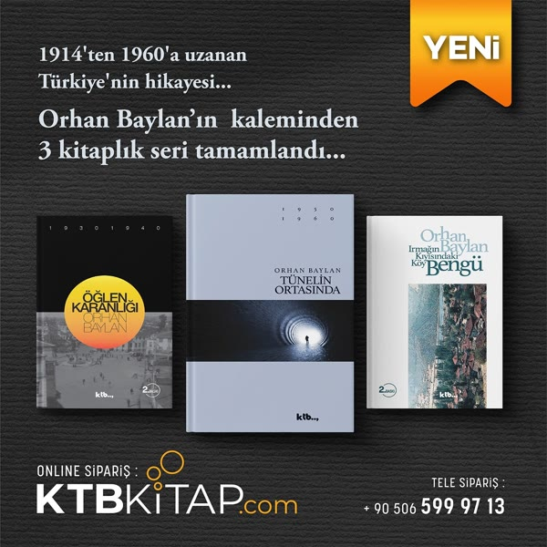

الكتب


Öğlen Karanlığı
شراء

Irmağın Kıyısındaki Köy Bengü
شراء

Bengü
شراء · KTB KitapOrhan Baylan
Orhan Baylan 3'lü Set
شراء · KTB KitapOrhan Baylanالبرامج
الحلقات الأكثر مشاهدة

حديث صريح
كيف انفصل شاهد السبحة؟ صروح العلم التي دمرت
Orhan Baylan 9:58

حديث صريح
كيف تأسست كلية روبرت ولماذا؟
Orhan Baylan 9:52

حديث صريح
هل يكفي الفوز بالانتخابات لإدارة الدولة؟
Orhan Baylan 14:45

حديث صريح
ماذا جرى للأمانات المقدسة؟
Orhan Baylan 11:14

حديث صريح
لم أحلق لحيتي حتى انتهيت من الرواية
Orhan Baylan 17:19

حديث صريح
ينصح غيره ويخالف نصحه
Orhan Baylan 14:10
أحدث الحلقات

حديث صريح
أي ديمقراطية يريدها الغرب لتركيا؟
Orhan Baylan 9:55

حديث صريح
السيوف فتحت البلدان والدراويش فتحوا القلوب
Orhan Baylan 12:06
حديث صريح
ينصح غيره ويخالف نصحه
Orhan Baylan 14:10
حديث صريح
ماذا جرى للأمانات المقدسة؟
Orhan Baylan 11:14

حديث صريح
كيف تكونت الثروات الرأسمالية الكبرى في تركيا؟
Orhan Baylan 14:31
حديث صريح
هل يكفي الفوز بالانتخابات لإدارة الدولة؟
Orhan Baylan 14:45

حديث صريح
ماذا جرى لأملاك وقف آيا صوفيا؟
Orhan Baylan 14:52

حديث صريح
تركيا بلا إرهاب والنقاش حول المرحلة الجديدة
Orhan Baylan 15:09

حديث صريح
ماذا خسرت تركيا بسبب مساعدات مارشال؟
Orhan Baylan 14:26

حديث صريح
خلفيات اتفاق مكة
Orhan Baylan 13:21

حديث صريح
من رواد الاتحاد الإسلامي الحقيقيون؟ مواجهة مع التاريخ
Orhan Baylan 17:11

حديث صريح
حقيقة معاهد القرى: تنوير أم حرب على المعتقدات؟
Orhan Baylan 15:20